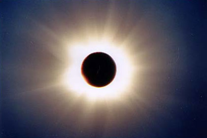

June 21, 2001 (Winter Solstice in the Southern Hemisphere) Lusaka, Zambia, Central Africa Latitude: 15° 08' 01" South; Longitude: 28° 26' 1" E
|  |
The group experienced an unusual three days of cloudless skies leading up to this first eclipse of the new millennium. The moon nibbled its first bite of the eastern edge of the sun at 1:41:57 p.m., signaling first contact.
Our site along the side of a blue pond provided an exciting, unobstructed view of the shadow of the moon as it approached from the west. The moon shadow, always exciting, was best viewed later when we saw the video tape recording made by Dr. Shiloh Unruh, a former astronomer from Mount Hamilton near San Jose, California. He used six camcorders mounted on a circular platform to record six different aspects of the eclipse.
As the ingressing partial eclipse phase progressed towards totality, the air cooled and the sky darkened. A slight breeze over the pond ceased as the big show arrived. When the last rays of sunlight became hidden by the moon, 2nd contact clocked in at 3:09:58 p.m. Moments before, a startling "Diamond Ring" flashed before us as shouts of approval could be heard from the expeditioners and curious locals.
The clicking of camera shutters could be heard as photographers took countless photos and busily recorded this spectacular event with video camcorders. Another, unexpected diamond ring presentation took place when Chris Somerville kneeled before his lady friend, Erin Mumm, and asked as he placed a diamond ring on her finger, "Erin, will you be my wife?" She accepted immediately. We learned of this romantic event after totality. Both are from Tennessee.
Three rosy-pink prominenses, magnetic storms appearing on the limb of the eclipsed sun, helped beautify this spectacular sight. The pearly-white atmosphere surrounding the sun, the corona, blossomed into a symmetrical flower with short petals. These streamers were similar to the eclipse of August 11, 1999, that I saw from near Munich, Germany. During a period of maximum sunspot activity an eclipse typically produces a symmetrical corona, while in a minimum sunspot year one expects very long coronal streamers.
At third contact the first rays of sunshine poked through valleys on the moon. This "third" Diamond Ring presentation of this eclipse occurred at 3:13:03 p.m., heralding another roar from the highly excited persons on the banks of the Karubwe farm pond. The moon's shadow could be seen racing away from us towards the east, not to be seen again until December 4, 2002 - then from South Africa, the Indian Ocean, or Australia. Totality at our site lasted 3 minutes and 31 seconds.
Julie Heikes, a Polaroid filming specialist and graphic artist from St. Michaels, Maryland, recorded the entire event on her hand-held recorder. She also taped our adventures throughout the rest of our trip.
Kirsten Smith brought her homemade 6-inch telescope for this eclipse and monitored the outgoing partials until fourth contact (4:29:15 p.m.). She projected the sun's image onto white cardboard for easier monitoring. There to share her results were her dad David, and mom Sharon, all from San Jose, CA.
The temperature during the eclipse decreased from a high of 79 degrees Fahrenheit to a minimum of 61 degrees - a drop of 18 degrees. No shadow band activity was reported near the beginning or the end of totality.
For this eclipse I elected to mount a high resolution Canon GL1 camcorder where I usually mount my C-90, 1000 mm focal length telescope. Everything normally rides piggyback on my 3-Way Telescope (600 mm focal length). The GL1 has three CCD sensors, each assigned to handle one of the three primary colors - red, green and blue. I built a special filter adaptor which bayonets to the front of the fluorite lens. This lens is manufactured from a grown crystal material and provides outstanding resolution, contrast and color reproduction. I used a density-5 solar filter constructed from Baader AstroSolar safety film purchased from Astro-Physics, Inc.
Special care is necessary to handle the large change in brightness from the sun's partial phase to totality. I used the TV mode at 8000 shutter speed and covered the lens with a density-5 filter to record the partial phase images. Then at totality, and only when the activity of the bright Baily's Beads/Diamond Ring moment was over, I removed the solar filter and recorded the inner corona and rosy-pink prominences. To open up the exposure for the corona I switched the camcorder to the "Easy Recording" mode. At third contact, I quickly replaced the solar filter to prevent damage to the camcorder. The GL1 has an optical zoom of 40x and a digital zoom of 100x. The 40x zoom presented an ideal image size of the partials and prominences, almost filling my field of view. I remotely zoomed in to capture the full width of the corona. There was no need to use the 100x zoom capability as a larger image size was not required and the loss of resolution would have been unacceptable.
In my twenty-two solar eclipse adventures I have mentioned many times before that there always exists the possibility that the eclipse will be clouded out; therefore, one must give higher priority to one's itinerary. Traveling to remote countries presents one with a rare opportunity to explore other places, peoples and cultures. Our migrant traveler group took many interesting side trips on this journey. In Lusaka we were shown many of the historic sites pertaining to the revolution which saw this former country of Rhodesia become Zambia and also Zimbabwe.
The night before the eclipse we were treated to a view of the wonders of the Southern sky. We enjoyed seeing the Southern Cross (Crux), with its associated Coal Sack and the Jewel Box Cluster; Alpha Centauri, the closest star (other than our sun) to earth; Beta Centauri; Omega Centauri, that beautiful globular cluster; the amazing Eta Carina nebula; and the "False Cross" which is often mistaken for the Crux. All this was laced together by the amazing arm of the Milky Way. It was at this star party that Kirsten Smith saw "first light" through her homemade telescope. The 19-year old sophomore from Brigham Young University did such a perfect job in her mirror grinding that she was awarded a summer job at the NASA facilities in Mountain View, California.
A real treat was to see the red planet Mars high in the sky, approximately 70 degrees above the horizon, along with the constellations Scorpio and Sagittarius. In North America our view of Mars during this close apparition has been very low in the sky to our south.
The big attraction of this trip was Victoria Falls. The flow of the mighty Zambezi River over this 355-feet high, mile-wide gap is breathtaking. The roar of the falls is one thing, but the misty cloud formed by this act of nature requires the use of raincoats. More so, cameras and camcorders must be totally protected with plastic covers or be ruined by water - as many found out the hard way. The continuous spray cloud above the falls can be seen from miles away. In small groups we all took tethered balloon rides 400 feet up for a better view of the falls. The helium filled balloon swayed its nervous passengers from side to side in the afternoon wind. We almost did not go up because of the wind. Group members Wes and Noni Hamilton from Evergreen, Colorado, braved a test ride just before me. We all returned safely.
For comparison, Victoria Falls is twice as high and one and one-half times as wide (5600-feet) as Niagara Falls. The entrance to the falls is marked by a tall statue of Dr. David Livingston, who on November 16, 1855, was the first white man to see the falls. He named them Victoria in honor of the Queen of England. It was near here that I met many of my eclipse-chasing friends from past events.
We enjoyed a sunset cruise on the Zambezi River featuring sightings of many hippos bathing, and the next morning a sunrise champagne breakfast cruise on a vessel provided solely for our group and its cooks and operators.
Several of us were treated to a train ride at sunset over the bridge which straddles the deep gorge of the falls. The bridge, one of the highest in the world, is often used by bungee jumpers. Our eclipse ambassador, Dr. Shiloh Unruh, wore a crazy homemade headgear complete with teddy bear and windmill fan. He was the center of attention throughout our trip, like a clown from outer space. Dr. Shiloh paid a good sum to ride in the engine room and blew the whistle continuously.
We next bussed to the Hwange Game Preserve, rated as one of the best in Africa. We went on two safaris which included some wonderful views of wild animals and colorful fowl. The African acacia and baobab trees made excellent silhouettes during a delightful reddish sunset. We needed several blankets to keep us warm at night, the coldest part of the trip. Cold in Africa?
Lastly, we flew to Harare, the capital of Zimbabwe, a very modern city with many high-rise buildings. A four-hour bus ride took us south to the famous Great Zimbabwe Ruins, the remnants of a large city built some 500 to 800 years ago and inhabited then by some 20,000 people. There are two main sites: an impressive Hill Complex and below that the Great Enclosure. Great Zimbabwe means houses of stone. The walls were constructed using individually shaped granite blocks carefully pieced together without the use of mortar. The Great Enclosure, which is the dominant feature, has a circumference of over 800 feet with walls about 33 feet high and 15 feet wide in some places. The purpose of a conical tower near the southern wall remains a mystery to this day. Could there be some astronomical significance? The Great Enclosure is the largest ancient building in Africa south of the Sahara. We enjoyed lunch at the impressive Great Zimbabwe Hotel, a must for anyone visiting this area.
As usual every trip must come to an end. This adventure into the heart of Africa for a memorable 12 days I will never forget. Now I'm excitedly anticipating my 23rd eclipse adventure into the shadow of the moon in December 2002. I intend to share the next total eclipse with my grandson, Matthew.
My thanks to my personal editors Joe Heim and May Coon for reviewing this article.